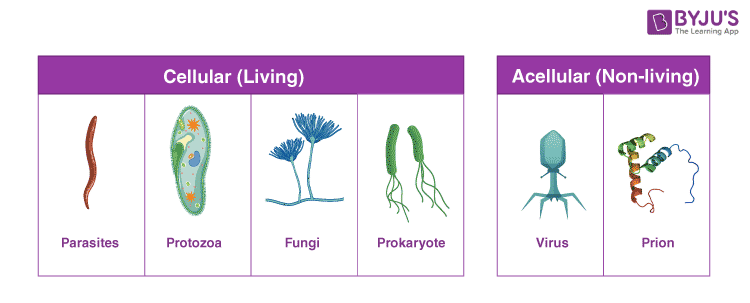
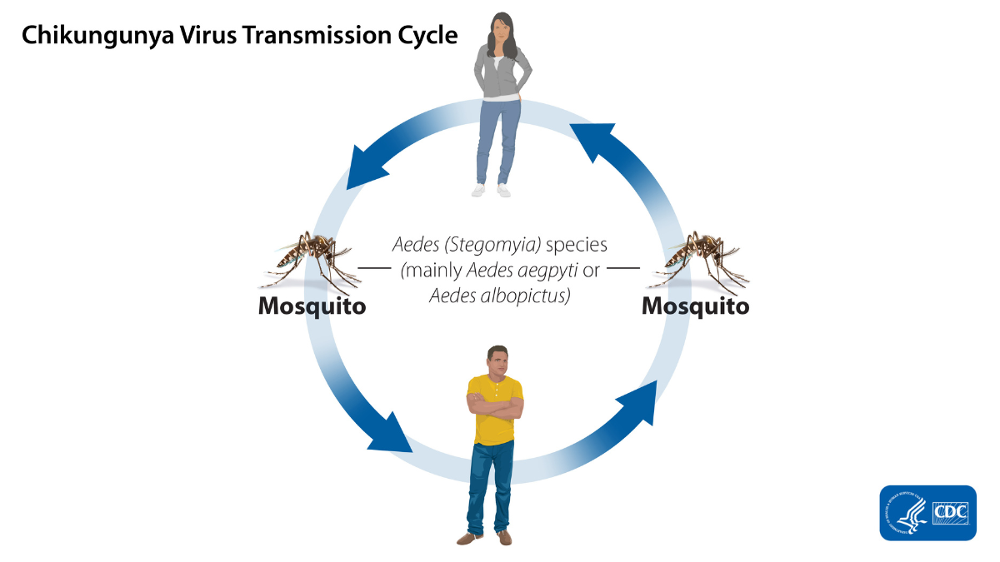

Fundamental Concepts (基本概念)
Infection (感染)
Process of invasion of pathogens, where they multiply and replicate in the body[cite: 7].
Infectious Disease (传染病)
Transmitted disease caused by an invading pathogen from an infected organism to a person through a medium (water, air, vector)[cite: 8].
Contagious Disease (接触传染病)
Easily transmitted from one person to another through direct or indirect contact[cite: 9].

Transmission Modes (传播方式)
| Mode | Examples |
|---|---|
| Indirect (Vector) | Aedes (Dengue), Anopheles (Malaria)[cite: 17, 63]. |
| Direct (Contact) | HFMD, AIDS, syphilis, Cat Scratch Disease (CSD)[cite: 22, 24, 63]. |
| Airborne | SARS-CoV-2, Tuberculosis (TB)[cite: 33, 63]. |
| Vertical | Placenta or breast milk (AIDS, Zika)[cite: 37, 39, 63]. |
| Waterborne | Cholera, Food poisoning (Salmonella)[cite: 42, 70]. |

Vaccination (疫苗接种)
Introduces weakened/inactive pathogens to stimulate antibodies and memory cells[cite: 80].
Live Vaccine: Weakened pathogens; long-term protection; not for weak immune systems (e.g. Smallpox, MMR)[cite: 82, 83, 100].
Non-live Vaccine: Dead pathogens; safer for weak immune systems; needs boosters (e.g. Hepatitis A, Flu)[cite: 84, 85, 86].
Exam Simulator (Paper 1 模拟)
Q: Which pattern describes a disease consistently present but limited to a specific region? [cite: 48]
Quick Check (问答练习)
How does vaccination help prevent smallpox? [cite: 124]
Show Answer
Vaccine contains weakened vaccinia virus[cite: 129]. Lymphocytes recognize it as foreign antigen and stimulate a humoral immune response[cite: 130]. B cells divide to produce antibodies and memory cells which circulate for future protection[cite: 130, 131].